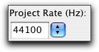
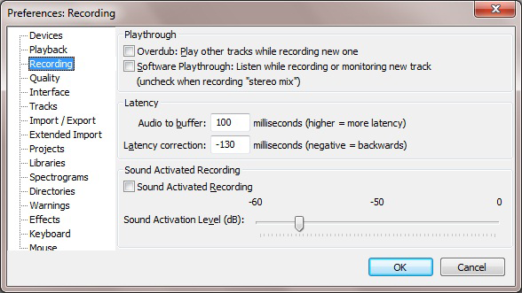

Tutorial - Audacity Settings for Recording
From Audacity Manual
Now that you know you're getting sound into the computer, it's time to launch Audacity and make some basic settings to enable recording.
Project Sample Rate
- 
The sample rate in Hz defines the number of digital audio samples per second taken from a continuous analog signal.
44100 Hz is standard for creating files that can be burned to Audio CD or for high-quality MP3 files.
Project Sample Format
The Project Sample Format (also known as Bit Depth or Word Size) is the number of computer bits present in each audio sample. It determines the dynamic range of the audio. Audacity's default is set to 32-bit float. This is good for editing and processing audio. You can easily downsample to 16-bit (the standard for creating WAV files that can be burned to audio CD) when exporting later.
If you need to change your sample format this can only be done in the Quality section of Preferences. However it is strongly recommended that you retain the default setting.
Temporary Files
Most users have only one hard disk. However, if you have multiple hard disks, you will want to make sure that Audacity uses your largest or fastest hard disk to store audio. Open the Preferences (in the Edit menu, or the Audacity menu on Mac OS X) and click on the Directories tab. Make sure that the directory listed is on your preferred hard disk.
| If your home directory is mounted from a remote server, you definitely do not want Audacity's temporary directory to be there! |
Software Playthrough
Now click on the Transport menu and, if you are recording from a microphone, make sure that "Software Playthrough" is not checked - Software Playthrough will cause undesirable feedback from the computer speakers to the microphone. If you are recording a guitar or keyboard and want to hear the instrument through the computer speakers, make sure that "Software Playthrough" is checked.
Hardware playthrough
This is a method available on some Windows and Linux machines that lets you unmute the input directly in the sound device. To use this, open the operating system sound mixer, then the Playback section, then unmute line-in and turn the volume up. You can find the system mixer in the Control Panel at on Windows Vista/Windows 7/Windows 8 or on Windows XP. On Linux, it may be possible to unmute input devices in ALSAmixer then set playback and recording devices in Audacity to the (hw) device.
| Unfortunately Macs have not had proper hardware playthrough support for some years. On most machines Audacity's Hardware Playthrough choice in Recording Preferences is not functional. |
If hardware playthrough is required it is best to use an external USB or Firewire audio device that has a headphones jack for no-latency monitoring (such as the Behringer UCA 202 USB or Zoom H2 USB).
Overdub
Now click on the Transport menu again and make sure that "Overdub" is not checked. When this option is enabled Audacity will play other existing tracks while recording a new one. You can decide which tracks will play according to their mute/solo buttons on the Track Control Panel.
It is unlikely you will need overdub for your first recording. If you do want to overdub by (for example) singing over a recorded instrumental track, you should be aware of the Latency correction preference.
Latency correction
On most computer systems there will be a delay known as latency between singing or hitting your note and it being laid down in the recording. When is set to "on" and you record with another track already present, Audacity will push the recorded track backwards by 130 milliseconds to compensate for the delay. If your latency is constant, you can adjust the Latency correction value so that your recorded tracks should end up properly synchronized with the other tracks after correction. To set a custom latency value for your system, see the Latency Test page.
Sound Activated Recording
Also on the Transport menu, make sure that "Sound Activated Recording" is not checked.
When this is enabled, recording will automatically start or resume when the recording volume rises above the chosen threshold level, and pause when the level falls below that threshold. You cannot pause Sound Activated recordings manually using the Pause button or corresponding menu item or shortcut.
Audacity Preferences
If you prefer, you can make the above settings in your Audacity Preferences. To access this, use (or on Mac OS X).
The image below shows the Recording section of Preferences:
- 
There are many other settings that can be made in Preferences. Do take some time to explore and understand these.
For example Sample Rate and Sample Format can be changed in the Quality section of Preferences.
Links
> Forward to: Tutorial - Selecting Your Recording Device